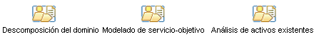

| Concepto: Desarrollo de soluciones orientadas a servicios |
 |
|
RUP y arquitectura y modelado orientado a serviciosEl método SOMA se desarrolló como modelo de compromiso dentro del grupo de Servicios empresariales globales de IBM, y aunque se disponía de descripciones y artículos de uso público fue principalmente un método usado por los consultores y no disponible para clientes de IBM. Por otro lado, el RUP es un producto comercial ofrecido por IBM que los clientes utilizan para desarrollar sus propios procesos de desarrollo de software. Esta oferta de método integrado ha sido desarrollada por RUP/SOMA para aportar los aspectos únicos de SOMA al método comercial RUP y ponerlos a disposición de los clientes comerciales. La infraestructura para RUP/SOMA se describe en la siguiente imagen, que muestra las fases clave del método, esto es, las influencias que mueven cada fase y los artefactos producidos. Tenga en cuenta que el artefacto clave manipulado por el método es el modelo de servicio (descrito a continuación).
Identificación de servicioLa identificación de servicio es principalmente un conjunto de actividades de tiempo de elaboración centrado en la identificación de servicios candidatos del conjunto de activos tanto empresariales como de TI. El flujo de trabajo de la identificación de servicio es el siguiente:  Las tareas identificadas dentro de este conjunto de actividades son: Especificación de serviciosLa especificación de servicio es principalmente un conjunto de actividades de tiempo de elaboración centrado en la selección de servicios candidatos que se desarrollarán en servicios completos. Estos servicios se asignan luego a subsistemas también identificados a continuación y posteriormente descompuestos en conjuntos de componentes para su implementación. El flujo de trabajo para la especificación de servicio es el siguiente:
Las tareas identificadas dentro de este conjunto de actividades son: Realización de serviciosLa realización de servicios es principalmente un conjunto de actividades de tiempo de construcción centrado en la realización del diseño de componentes listo para la implementación de componentes. El flujo de trabajo para la especificación de servicio es el siguiente:
Las tareas identificadas dentro de este conjunto de actividades son: El modelo de servicioEn SOMA el modelo de servicio se describe con la siguiente imagen; se trata de un único producto de trabajo, basado en documento, que incluye las distintas vistas técnicas y de ciclo de vida de los servicios identificados y especificados durante un proyecto. Las distintas secciones del modelo de servicio se muestran con mayor detalle en el apartado Artefacto: Modelo de servicio de RUP/SOMA.
El RUP Artefacto: Modelo de servicio se describe en formato documento y en formato UML (Plantilla: Modelo de servicio en Word y Plantilla: Modelo de servicio en UML) aunque es más probable que un proyecto utilice elementos de ambos formatos en la presentación de los resultados de su trabajo. |

© Copyright IBM Corp. 1987, 2006. Reservados todos los derechos. |